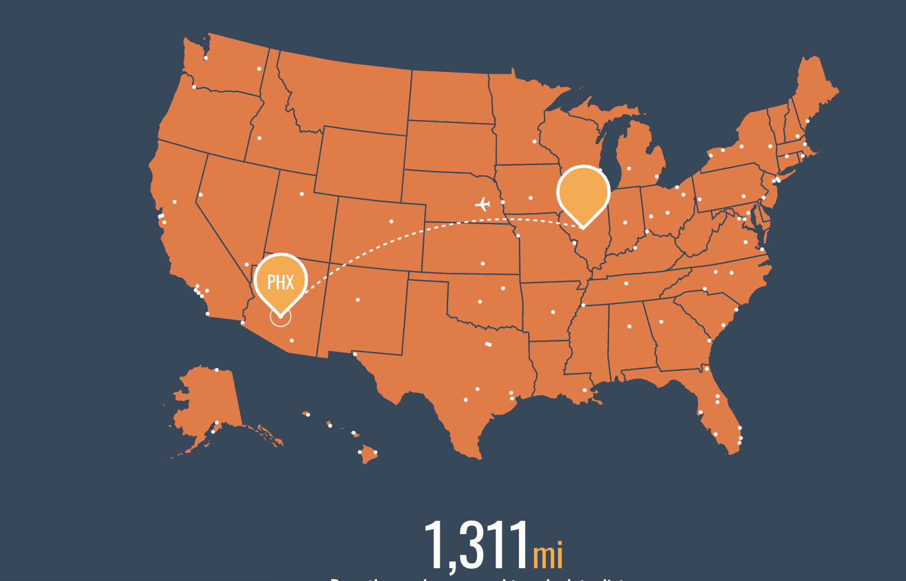
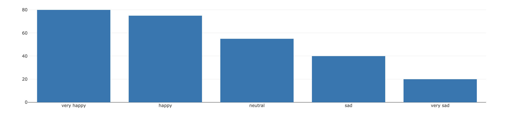

Bio
I was born in Phoenix, Arizona and moved to Champaign, Illinois when I was eight.
I spent the rest of my childhood in Champaign, attending Franklin Middle School and University Laboratory High School (Uni). It was at Uni where I developed my interest in Computer Science, specifically my senior year of high school. I then attended Northwestern University, located in Evanston Illinois. I am currently a sophomore at Northwestern, majoring in Computer Science.
In my free time, I really enjoy playing tennis and ice skating. I played as an individual in tennis competitions during high school, and whenever I have free time and it's warm outside I try to play doubles. Another fact about me is that my mood is extremely contingent on the weather. The colder it gets, the worse my mood. The correlation between the temperature and my mood is displayed on the following chart.
